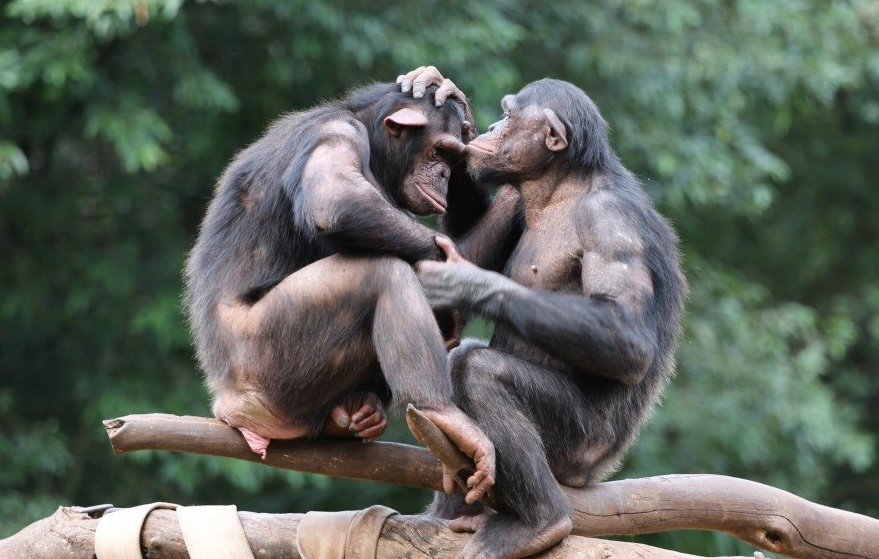

2026
01 自己紹介
日本を拠点に活動する学際的な研究者です。現在、専修大学の計算論的臨床心理学ラボで博士課程に在籍しています。ラボを率いる國里愛彦先生は、日本における計算論的精神医学のパイオニアの一人です。
それ以前は、英国のウルヴァーハンプトン大学で修士課程（Psychology of Mental Health and Well-Being）を修了し、ChatGPTが認知行動療法（CBT）の技法を用いて一時的なストレスを和らげられるかを検証するランダム化比較試験を行いました。学部はハワイ大学マノア校で、動物学、遺伝学、経済学、紛争解決などを学びました。そこでの学びが私の学際的な視点の土台となっており、素晴らしい先生方には今も感謝しています。
02 研究
博士論文では、知覚された孤立（perceived isolation）と精神病理の関係をテーマにしています。孤独感や社会的孤立がうつや不安などと関連することはよく知られていますが、なぜそうなるのかを解き明かす研究はまだ限られています。
本研究の目的は次の2つです。
- ヒト（Homo sapiens）が持つ、根本的かつ互いに異なる「つながりの欲求」（例：理解や態度を共有したいという欲求）を明らかにすること
- それらの欲求が満たされないとき、どのように精神症状が生じるのかを検討すること
進化理論は、1つ目の問いには直接的に、2つ目の問いにはより間接的に役立つと考えています。その両方に迫るため、進化生物学・神経科学・社会心理学の知見に加え、ネットワーク・アプローチや計算論的アプローチを用いています。
進化への情熱に目を曇らせてはならない。それでも進化の視点には、混沌とした精神医学研究に秩序をもたらす大きな可能性がある。

博士論文以外では、進化精神病理学、動物行動学（エソロジー）、科学哲学にも幅広く関心を持っています。
03 研究発表
04 学歴
博士課程（心理学）
修士（MSc, Psychology of Mental Health and Well-Being）
学士（社会科学）
05 所属学会
- International Society for Evolution, Medicine & Public Health （ISEMPH）
- 日本心理学会
- Pi Gamma Mu （社会科学分野の国際優等生協会）
06 連絡先
つながりの大切さを研究する者として、アイデアの交換や共同研究に関心のある研究者の方々とのつながりをいつでも歓迎しています。
takekuro@hawaii.edu
神奈川県